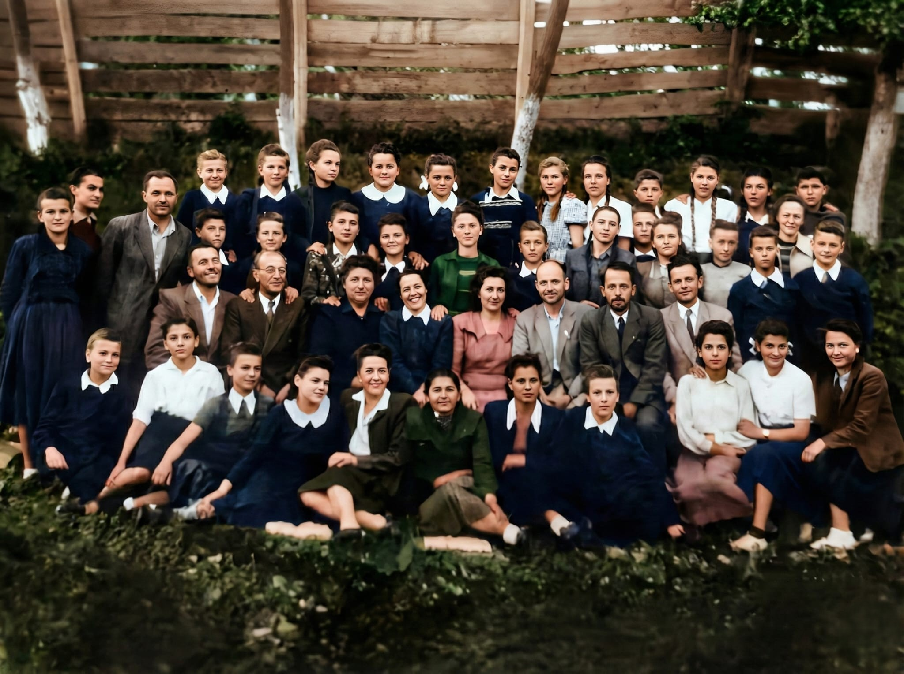
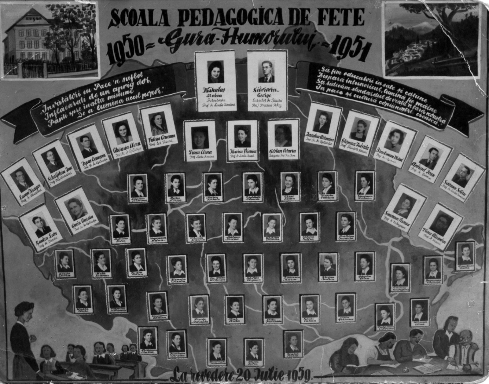
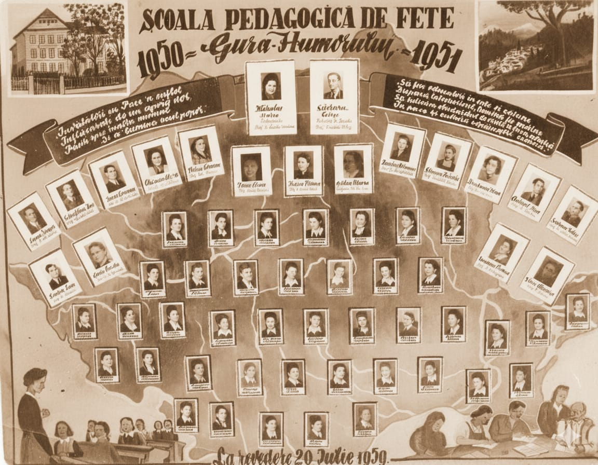
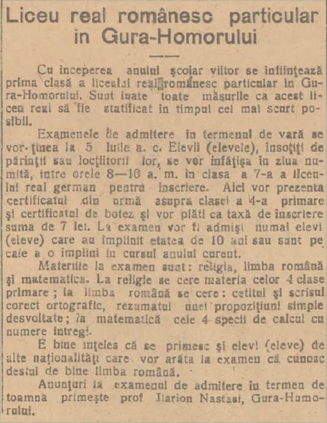
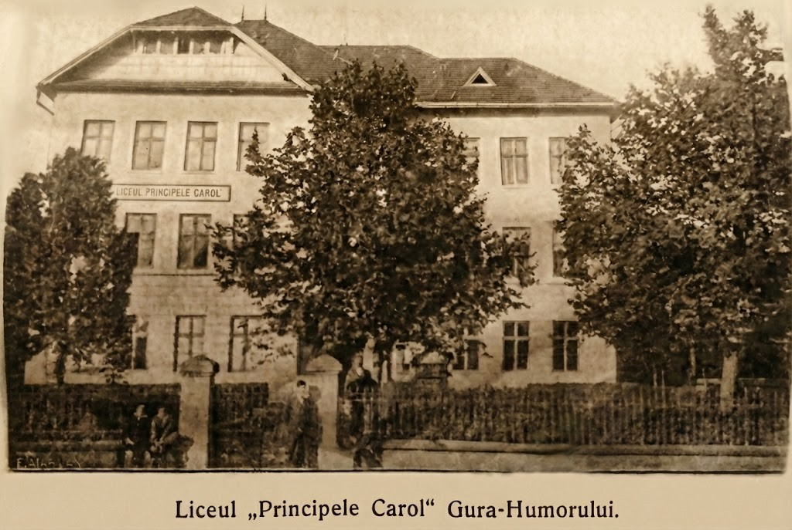
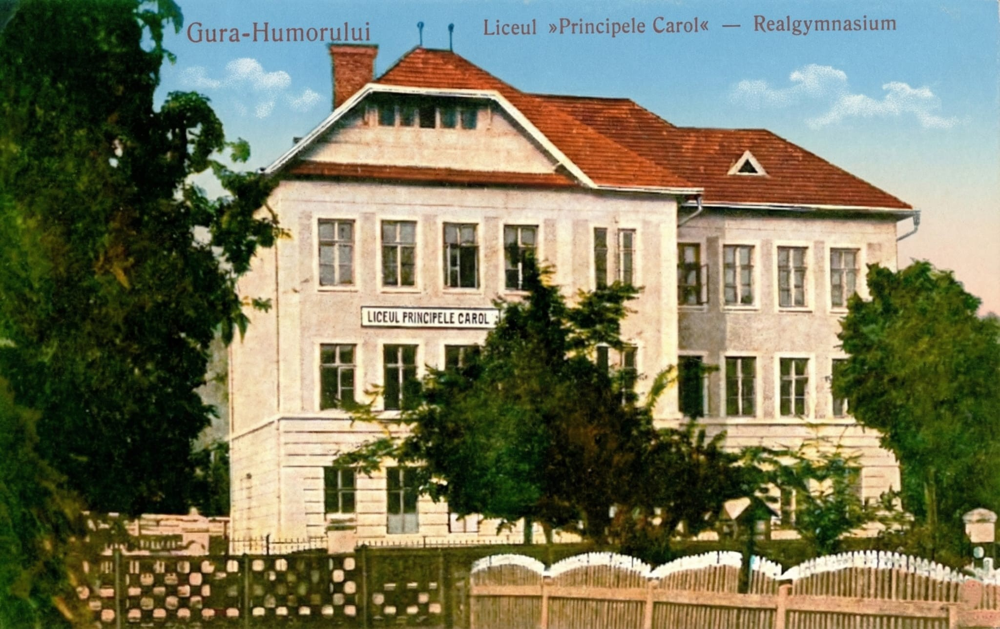
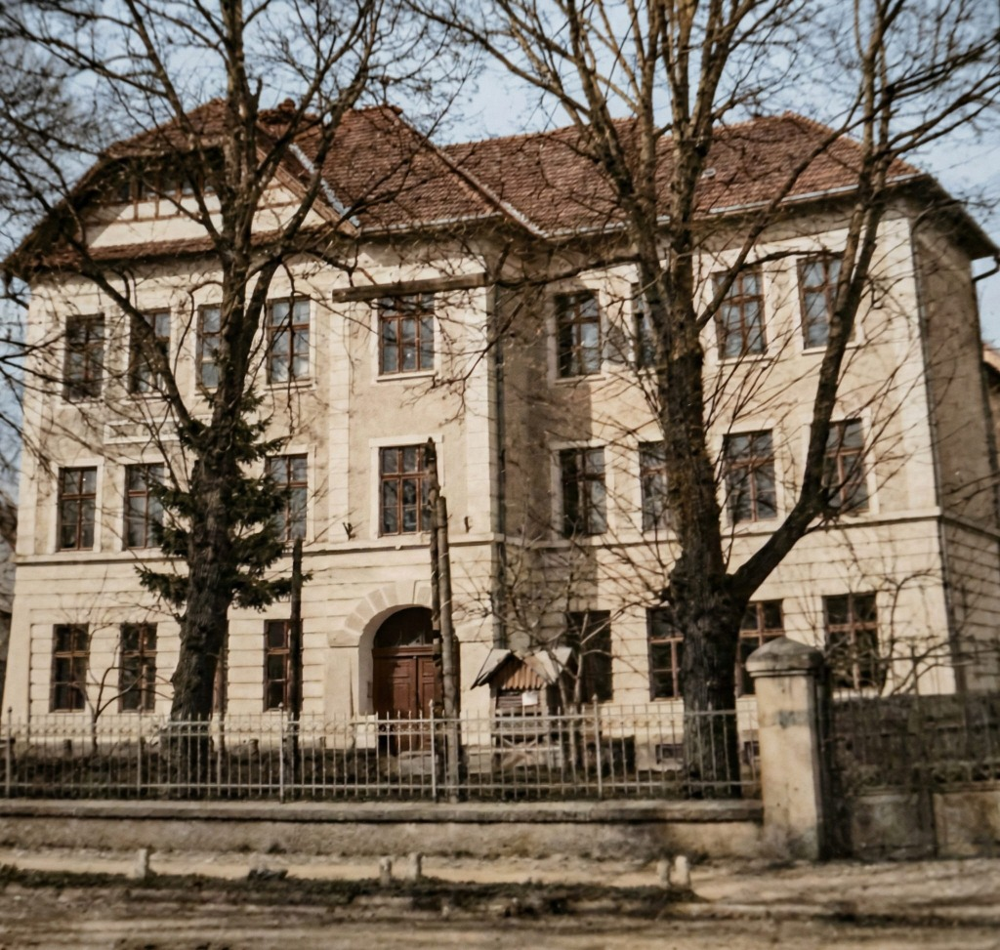

Muzeul virtual
O istorie de peste un secol. Surse: ziarul „Vremuri Humorene" și arhive personale.
Chipuri și destine
Oamenii care au scris istoria școlii noastre.



Documente istorice
Anuare, documente și însemnări din arhiva școlii.

Memoria zidurilor
Clădirea și spațiile care au găzduit generații de elevi.


